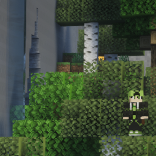

KKSERVER
Minecraftサーバー停止中複合型マルチプレイサーバーです。詳細は下のページより
すべてのサービスの利用には特別な登録は必要ありません。
複合型マルチプレイサーバーです。詳細は下のページより
プロキシや各種ツールなどの便利な機能が利用可能です。
ミニゲーム。開発中です。
Minecraftのマルチプレイから便利な情報ツール、ミニゲームなど各サービスはこちらから
サービス開始からの進行状況を追跡できます。
より多くの人により良い体験と役立つサービスを提供するため、現在も開発・改善を進めています。
多くの人の利用にあたり、サイトを新規作成・刷新しました。これからも改善を続けていきます。
夏前の期間に合わせ、サーバーのパフォーマンスを最適化しました。また、閉鎖予定だったワールドも調整しました。
当時は1ワールド、小規模だったサーバーを、より多くのプレイヤーが楽しめるようにリニューアルしました。
2025年、KKservice（旧「KKserver」）が始動。当時はMinecraftサーバーとして運営されていました。
サーバー運営や維持管理を一人で担当しています。また、サービスの制作もすべて行っています。
